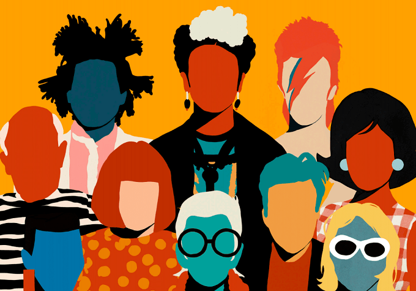

Coco DávezEl dibujo contemporáneo actual tiene a Coco Dávez como una de las ilustradoras que han pasado de ser promesa a realidad. Coco Dávez cuenta con un estilo propio, colorista, una gran experiencia en lo creativo y la fuerza necesarias para tener un futuro espectacular. Su nombre verdadero es Valeria y el simpático personaje de Plaza Sésamo, Coco, tuvo mucho que ver en el sobrenombre con el que ahora se la conoce. Cuando llegó a Londres para estudiar fotografía se dio cuenta que realmente ella lo que le gustaba era la pintura, por lo que decidió centrarse en pintar y dejar la fotografía como un hobby. Los retratos en su obra son un símbolo donde queda claro su interés por reflexionar sobre lo que le pasa por la cabeza, tanto para expresar la admiración por personajes conocidos como dar una mayor libertad a la hora de retratar a los anónimos. Posiblemente, habrás visto algunas pinturas de su obra Faceless, la colección que más le ha impulsado hasta el momento. |
 |
|
En sus ilustraciones se puede ver la influencia de la literatura, el cine, la música, la fotografía o el arte. Especialmente la música y la literatura son algunas de sus mayores influencias. El collage, además del dibujo es una de las técnicas artísticas que utilizan, donde se encarga de mezclar materiales, que van desde metales a sedas, incluso documentos añejos y demás materiales que puedan añadirse a un papel. Además de particulares no ha desdeñado el trabajo con grandes firmas y editoriales. Comenzó a trabajar en el diario El Mundo, donde todavía sigue desarrollando su trabajo. Una inmejorable carta de presentación que se completa con otros sectores del mundo editorial En su evolución lo que busca es inclinarse hacia el mundo del retrato, donde ha demostrado tener talento suficiente como para plasmar con éxito todo su artes e ideas. Coco Dávez es sabedora del auge que en estos momentos experimenta el dibujo y la ilustración, uno de los sectores donde la crisis ha tenido menor influencia y que una vez se va saliendo de ella, parece que ha sabido aprovechar el impulso. |
|